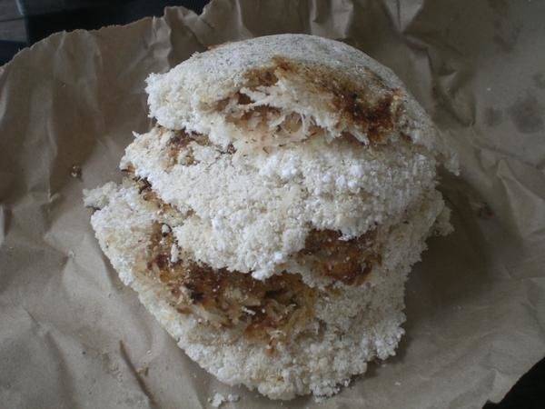
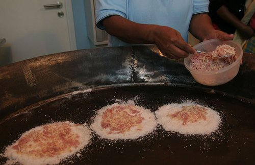
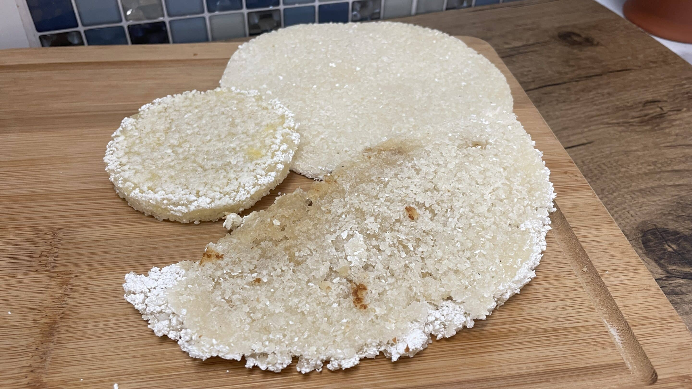

Menu

Kassav de coco (paquet de 4)
Délicieuses galettes antillaises au coco. Croustillantes à l’extérieur, moelleuses à l’intérieur. Parfaites en accompagnement ou en gourmandise.
3,00 €

Kassav salée (paquet de 3)
Découvrez nos kassav salés : jambon, fromage, thon, morue. Galettes de manioc croustillantes, garnitures savoureuses. Parfaites en entrée ou en snack.
3,00 €

Kassav nature (paquet de 3)
Authentique galette antillaise préparée avec de la farine de manioc pure. Croustillante à l’extérieur, moelleuse à l’intérieur. Polyvalente, elle peut être dégustée en accompagnement ou en en-cas.
3,00 €